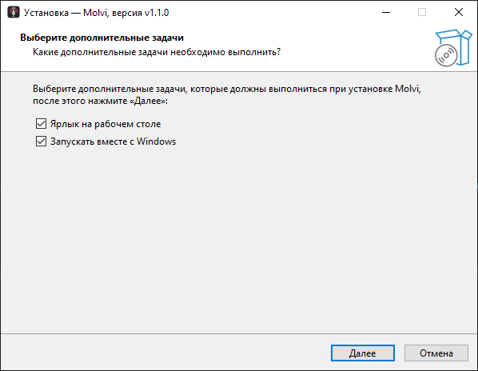
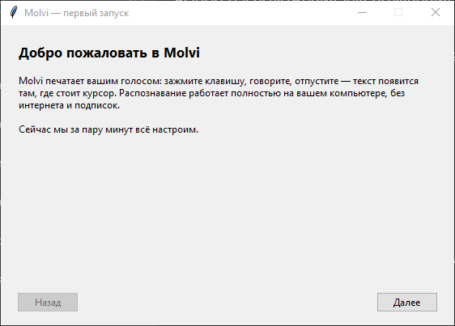
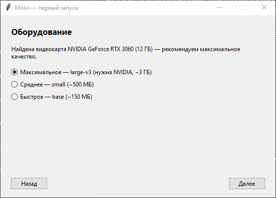
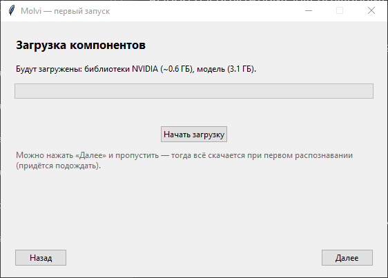
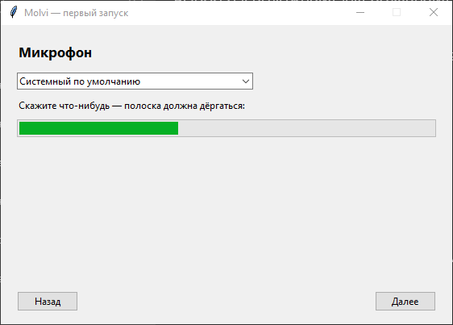
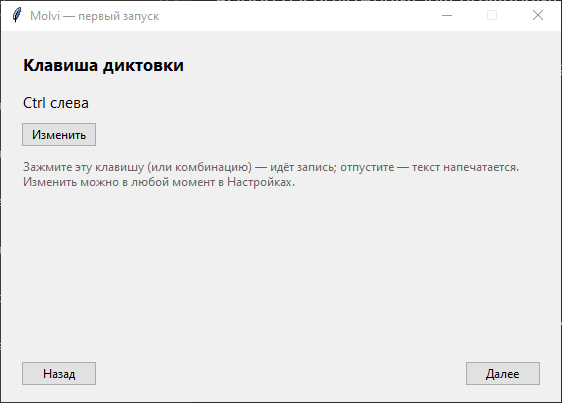
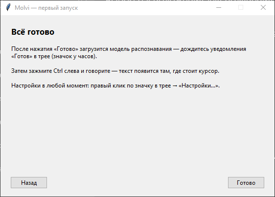
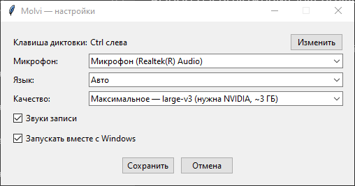

Установка Molvi
Пять шагов, 5–10 минут вместе с загрузкой модели. На каждом экране подсказываем, что выбрать и почему.
Скачайте установщик
Нажмите кнопку — откроется страница последнего релиза на GitHub. Скачайте файл Molvi-Setup-…exe (около 70 МБ) из блока «Assets».
Molvi — программа с открытым кодом, и GitHub — её официальный и единственный источник. Установщики из других мест могут быть подделкой.
Пройдите предупреждение Windows
При запуске установщика Windows покажет синее окно «Система Windows защитила ваш компьютер». Это нормально:
- нажмите «Подробнее»;
- затем появившуюся кнопку «Выполнить в любом случае».
Система Windows защитила ваш компьютер
Фильтр SmartScreen в Microsoft Defender предотвратил запуск неопознанного приложения, которое может подвергнуть компьютер риску.
ПодробнееТак выглядит окно SmartScreen (иллюстрация).
Windows доверяет программам с платной цифровой подписью (несколько сотен долларов в год). У бесплатного Molvi её нет, поэтому SmartScreen перестраховывается. Код Molvi открыт — любой может проверить, что внутри.
Пройдите установщик
На первом экране предложена папка установки — просто нажмите «Далее». Затем — выбор дополнительных задач:

- РекомендуемЗапускать вместе с Windows — Molvi живёт в трее и почти не ест ресурсов, пока вы не диктуете. С автозапуском диктовка всегда под рукой, без него Molvi придётся запускать вручную.
- По вкусуЯрлык на рабочем столе — нужен только для ручного запуска. Если включили автозапуск, можно снять.
Дальше — «Далее» → «Установить». В конце оставьте галочку «Запустить Molvi» и нажмите «Готово».
Пройдите мастер первого запуска
При первом запуске Molvi сам предложит всё настроить — шесть коротких экранов.
4.1. Приветствие

Просто нажмите «Далее».
4.2. Оборудование и качество

Мастер сам определил видеокарту и отметил рекомендуемый вариант.
- NVIDIA от 6 ГБМаксимальное — large-v3 — лучшее качество, диктовка распознаётся почти без ошибок. Требует видеокарту NVIDIA с 6+ ГБ видеопамяти; загрузка ~3 ГБ.
- Без NVIDIAБыстрое — base — работает на любом процессоре и скачивается за минуту (~150 МБ). Качество ниже, но для коротких фраз достаточно.
- КомпромиссСреднее — small — заметно точнее base на процессоре, но и медленнее (~500 МБ).
Модель large-v3 на процессоре распознаёт минуту речи несколько минут — жить с этим нельзя, поэтому без подходящей видеокарты мастер предлагает быструю модель. Качество всегда можно сменить позже в Настройках.
4.3. Загрузка компонентов

Нажмите «Начать загрузку» и дождитесь надписи «Готово!».
Что именно скачивается — только открытые компоненты из официальных источников:
- Модель распознавания речи — faster-whisper от Systran
(конвертация открытой модели Whisper от OpenAI), скачивается с Hugging Face
в зависимости от выбранного качества:
large-v3 (~3 ГБ),
small (~500 МБ) или
base (~150 МБ).
Сохраняется в кэш Hugging Face:
%USERPROFILE%\.cache\huggingface - Библиотеки NVIDIA (только если есть подходящая видеокарта) —
официальные пакеты
cuBLAS и
cuDNN с PyPI
(~0.6 ГБ суммарно) — на них работает распознавание на GPU.
Распаковываются в
%APPDATA%\Molvi\cuda
Пропустить можно — но тогда всё скачается при первой диктовке, и первая фраза «зависнет» на несколько минут. Удобнее подождать один раз сейчас.
4.4. Микрофон

Скажите что-нибудь — полоска должна дёргаться.
- полоска двигается — оставьте «Системный по умолчанию» и идите дальше;
- полоска стоит — выберите в списке другой микрофон и проверьте снова.
4.5. Клавиша диктовки

По умолчанию — левый Ctrl: зажали, говорите, отпустили.
Левый Ctrl удобен: всегда под мизинцем, а случайные короткие нажатия (например, Ctrl+C) Molvi игнорирует — слишком короткая запись просто отбрасывается. Если Ctrl всё же мешает, нажмите «Изменить» и зажмите свою комбинацию, например Ctrl + Shift.
4.6. Готово

После «Готово» модель загружается в память — дождитесь уведомления «Готов» у часов (10–30 секунд).
Продиктуйте первую фразу
- поставьте курсор в любое текстовое поле — блокнот, браузер, мессенджер;
- зажмите Ctrl — появится пилюля «Запись…»;
- скажите: «Привет! Это Molvi печатает моим голосом»;
- отпустите клавишу — через секунду-другую текст появится у курсора.
Правый клик по значку Molvi в трее → «Настройки…»: клавиша, микрофон, язык, качество модели, звуки, автозапуск.

Окно настроек — всё то же, что в мастере, в одном месте.
Если что-то пошло не так
Распознаёт медленно
Скорее всего, работает процессор вместо видеокарты. Откройте журнал
%APPDATA%\Molvi\molvi.log и найдите строку «Модель загружена,
устройство: …» — там должно быть cuda. Если cpu —
в Настройках выберите качество «Быстрое», либо проверьте, что у вас NVIDIA
с 6+ ГБ видеопамяти и обновлён драйвер.
Текст не появляется
Проверьте микрофон: в журнале после «Запись … c» строка «Распознано 0 символов» означает, что микрофон молчит. Откройте Настройки и выберите другое устройство записи. Также убедитесь, что курсор стоит в текстовом поле — Molvi печатает туда, где курсор.
Антивирус ругается на установщик
Причина та же, что у SmartScreen: нет платной цифровой подписи. Код Molvi открыт — сборка происходит публично на GitHub из исходников, каждый релиз можно сверить с кодом. Добавьте Molvi в исключения.
Значок пропал из трея / ничего не работает
Загляните в скрытые значки (стрелка «^» у часов) — Windows любит
прятать новые иконки. Если Molvi действительно не запущен, запустите его
с ярлыка и посмотрите журнал %APPDATA%\Molvi\molvi.log —
при ошибке там будет причина. Не решилось —
создайте issue.